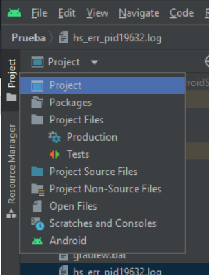
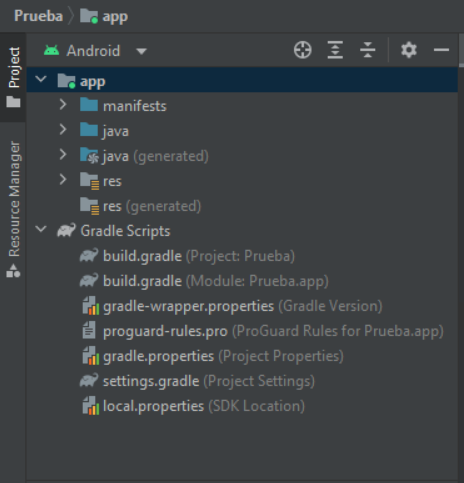
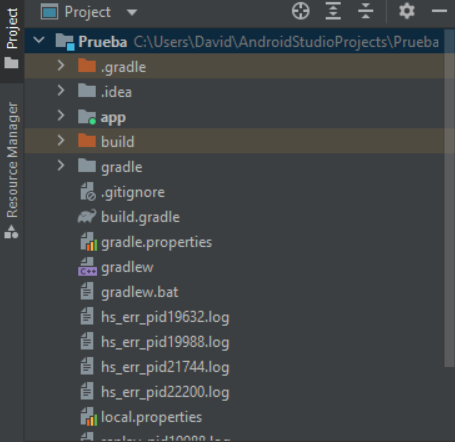

Para visualizar los módulos y los ficheros que los componen, Android Studio nos ofrece varios tipos de vistas que podemos cambiar con el menú desplegable de la parte superior de la ventana de proyecto.
Vista Android
Vista de Android: muestra una vista simplificada de la jerarquía de los ficheros del proyecto, con los elementos más relevantes en el desarrollo de una aplicación Android.
Vista Proyecto
Vista de proyecto: esta ofrece un mayor detalle de la jerarquía completa de las carpetas y archivos que compone el proyecto. Esta vista detallada no es la más cómoda para trabajar durante el desarrollo, pero es útil conocerla cuando necesitamos editar un fichero concreto que no podemos localizar en la vista anterior.